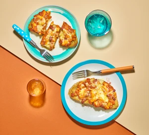

Beans on Toast

Make an elevated version of beans on toast using your favourite beans, plus tomatoes, garlic and chilli – they're great topped with cheese
Ingredients
- Vegetable Oil (2 tbsp)
- Large Onion, finely chopped
- Garlic Cloves, finely chopped (4)
- Smoked Paprika (1 tsp)
- Ground Cumin (1 tsp)
- Chipotle Chilli Paste
- Chopped Tomatoes or Passata (200g)
- Beans (800g)
- Crusty Bread Slices (4-8)
- Grated Cheddar (150g)
Steps
- Heat the oil in a heavy-based frying pan over a medium heat and fry the onion for 8-10 mins until softened and slightly caramelised. Add the garlic and spices, the chipotle chilli paste or chilli flakes, if using, and some seasoning. Fry for a few minutes more until the mixture is fragrant.
- Add the tomatoes, then swirl out the pan using 100ml water and add this too. Simmer for 10-15 mins until the mixture has thickened. Blitz the sauce using a hand blender, then taste for seasoning. Tip in the beans and mix well to coat. Warm through over a medium heat for 5 mins until the beans are piping hot.
- Heat the grill to high and toast the bread slices for 3-5 mins. Top with the beans and grated cheese, and pop under the grill until the cheese is melted and bubbling. Sprinkle with a little paprika and serve immediately.